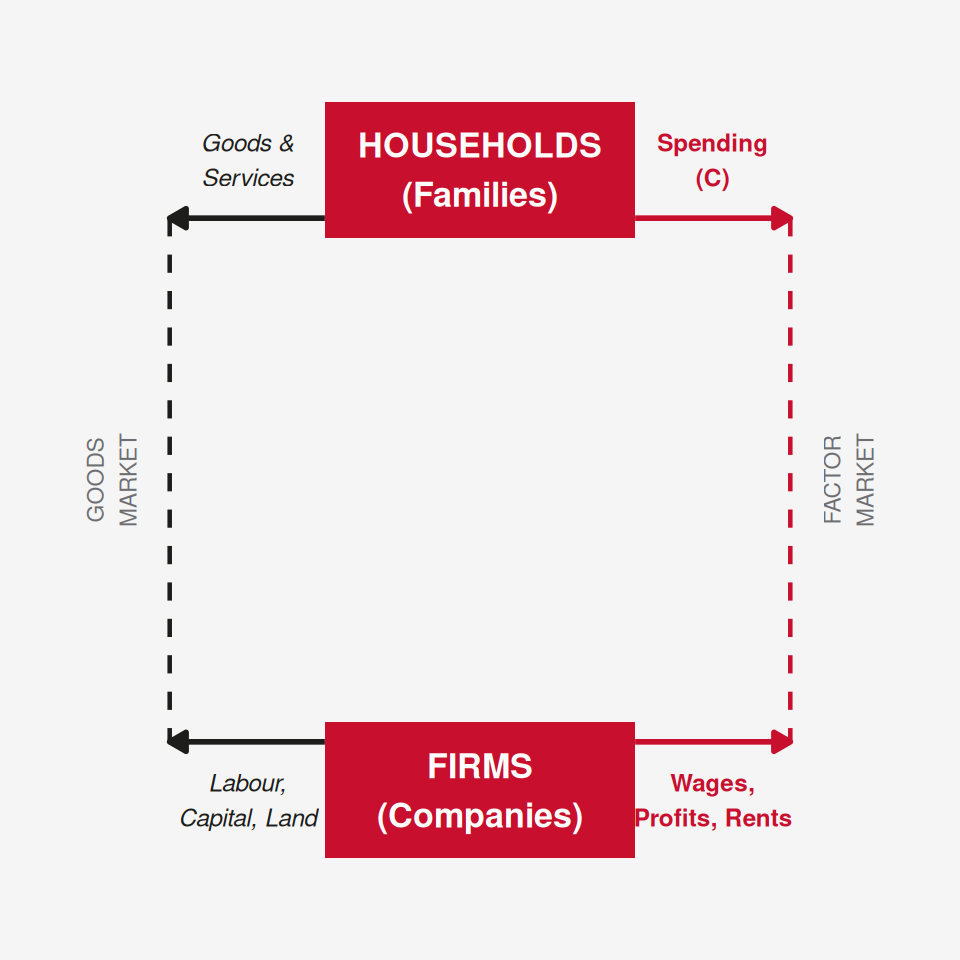

# Simple circular flow diagram using ggplot2 arrows
library(grid)
df_boxes <- data.frame(
x = c(0.5, 0.5),
y = c(0.82, 0.18),
lab = c("HOUSEHOLDS\n(Families)", "FIRMS\n(Companies)"),
stringsAsFactors = FALSE
)
ggplot() +
# boxes
geom_tile(data = df_boxes, aes(x = x, y = y),
width = 0.32, height = 0.14,
fill = ue_red, color = NA) +
geom_text(data = df_boxes, aes(x = x, y = y, label = lab),
color = "white", fontface = "bold", size = 4.5) +
# top arrow left: goods & services (firms → households)
annotate("segment", x = 0.34, xend = 0.18, y = 0.77, yend = 0.77,
arrow = arrow(length = unit(0.25, "cm"), type = "closed"),
color = ue_black, linewidth = 1) +
annotate("text", x = 0.26, y = 0.83,
label = "Goods &\nServices", size = 3.2, color = ue_black, fontface = "italic") +
# top arrow right: spending (households → firms)
annotate("segment", x = 0.66, xend = 0.82, y = 0.77, yend = 0.77,
arrow = arrow(length = unit(0.25, "cm"), type = "closed"),
color = ue_red, linewidth = 1) +
annotate("text", x = 0.74, y = 0.83,
label = "Spending\n(C)", size = 3.2, color = ue_red, fontface = "bold") +
# bottom arrow left: factors of prod (households → firms)
annotate("segment", x = 0.34, xend = 0.18, y = 0.23, yend = 0.23,
arrow = arrow(length = unit(0.25, "cm"), type = "closed"),
color = ue_black, linewidth = 1) +
annotate("text", x = 0.26, y = 0.17,
label = "Labour,\nCapital, Land", size = 3.2, color = ue_black, fontface = "italic") +
# bottom arrow right: income (firms → households)
annotate("segment", x = 0.66, xend = 0.82, y = 0.23, yend = 0.23,
arrow = arrow(length = unit(0.25, "cm"), type = "closed"),
color = ue_red, linewidth = 1) +
annotate("text", x = 0.74, y = 0.17,
label = "Wages,\nProfits, Rents", size = 3.2, color = ue_red, fontface = "bold") +
# left arc connecting
annotate("segment", x = 0.18, xend = 0.18, y = 0.77, yend = 0.23,
color = ue_black, linewidth = 0.8, linetype = "dashed") +
# right arc connecting
annotate("segment", x = 0.82, xend = 0.82, y = 0.77, yend = 0.23,
color = ue_red, linewidth = 0.8, linetype = "dashed") +
# labels for markets
annotate("text", x = 0.12, y = 0.5,
label = "GOODS\nMARKET", size = 3, color = ue_gray, angle = 90) +
annotate("text", x = 0.88, y = 0.5,
label = "FACTOR\nMARKET", size = 3, color = ue_gray, angle = 90) +
xlim(0.05, 0.95) + ylim(0.05, 0.95) +
theme_void() +
theme(plot.background = element_rect(fill = ue_light, color = NA))